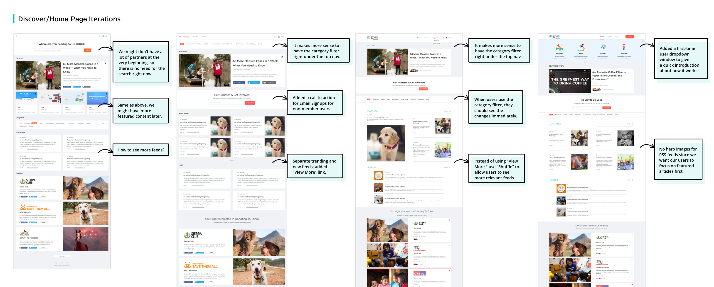

Do Good Points is a digital marketing platform that connects individual donors with causes. As part of a strategic shift, we decided to focus specifically on the "discovery experience” — to help people discover causes that inspire and engage them to do good.
The MVP of Do Good Points was built in a short time before I joined them. In haste, the overall design stumbled in places. Read more about the early iterations. We tried different ways to reconnect our existing users, but with little success. Based on the performance data we analyzed and the feedbacks we gathered from users, we realized that a single transaction site won’t increase the long-term user engagement. It's time to have a strategy shift by adding some contents that users can engage with to create a Good Community.
As a sole designer in the company, I worked closely with the CEO and the developers to validate ideas quickly and build a foundation for the new product.
Problem:
10000+ users and 5000+ donations but less than 1% return users.
Goals:
Increase user retention;
Generate more qualified user.
Design Process Overview:
 To comply with my non-disclosure agreement, I have omitted confidential information in this case study. All information in this case study is my own and does not necessarily reflect the views of Do Good Points.
To comply with my non-disclosure agreement, I have omitted confidential information in this case study. All information in this case study is my own and does not necessarily reflect the views of Do Good Points.
I conducted a focus group to know how they like the design updates. In their eyes, those design updates are good but not actually solve the core problem.
Meanwhile, I found research shows that our target audience researches the charity impact before donating. According to givingtuesday.org, 79% of millennials researched a charity before donating.
I assumed that our users are looking for something but they didn't find it on our site. And they want to understand the impact of their gift and what it helped accomplish.
Based on our research results and the information we collected from our competitors like GoFundMe and Kickstarter, we did multiple testing and iterations: we added more related images; we listed some impacts that the organization has made and is planning to do.

The result shows that it might increase the first time donation rate but won't bring users back. What was missing? I reviewed our research data, and started to rethink, what is the value of our product? What does retention mean in our site? What can users do if they come back to our site? What do we expect our users to do if they come back to our site?
Then I found something interesting: those one-time donors actually saved 3-4 charities in their "favorites", but only donated to one of them. Why? With these questions in mind, I decided to delve even more profound to our users by having another round of user research.
Before, I thought there were only two groups - donors and non-donors. I can't say it was wrong. However, when I went deeper, I realized that people have different ways and levels to support the causes they care about rather than donate. Here is the data that I found on Mintel along with my survey result about people's behavior about donating in the last 12 months.
There are slight differences between the numbers between Mintel and my survey about people who donated and not donated nor not likely to donate. However, the numbers of "I support this cause but 'haven't donated" are similar. Over 20% of people chose "I support this cause but have not donated." What does that mean?
In order to understand the motivation of donors and the reasons why people don't donate, I conducted individual interviews to identify the problems better.
By talking to real users individually, I realized that our users are not just looking for static charity information. They are expecting something dynamic (fresh and up to date contents) that they can engage with other than donate.
I summarized three personas as a reference to better define the problem.


1. Donating might not be a daily behavior for them, but Do Good could be.
People believe that donation is not the only way to give back. Some of them already Do Good in their daily life, such as keep classificating waste and offering homeless some food.
2. They tent to donate to the charity that they care about the most.
Most of our users supported at least two causes, and they donated to the one that motivated them the most. Their motivations might be related to their own experience or the news on TV and social media they have seen.
3. Some users aren't donating much money as they don't have enough.
Some younger users are still in school or just earned their degrees and trying to pay their student loan. Just as the research shows that Millennials "are less well off than members of earlier generations when they were young, with lower earnings, fewer assets, and less wealth."
4. The bad financial situation isn’t the pain, low empathy level is.
Actually, based on the data we collected from the existed product, users who donate the most usually are not the people who make the most. When some people say “I’ll donate if I have enough money”, they might still not donating if they have enough.
I led an online brainstorming section by using the miro board to define our design direction. I also presented to other team members who didn't get the chance to join the brainstorming to sync our process and get feedbacks from them. View Presentation

❤ Rewarding users Good Points when they did something good
❤ Increase their brand awareness
❤ Promote their social impact
❤ Generate potential donors
❤ Show more information about different charities
❤ Influence people’s mindset tends to give
Rather than creating something new for users to adapt, I believe that it's necessary to focus on what they are doing every day: they check their email around 15 times; they prefer to read the news on digital; they spend around 2 hours on social media; they like to interact meaningfully and contribute work as well...

By analyzing our users' daily behaviors, we decided to start with "featured articles/videos". The goal is to knowledge our user causes first, and then influence them to donate.
Partnering with non-profits and charities, we post featured articles/videos - trying to be as relevant as possible - for users to explore everyday. I want to help them find the cause that they care about. In the meantime, by engaging with the story or other users, I want our users to feel that they are in a Good Community. We also reward them when they finish reading by giving them points.

How to measure if they finished the reading?
Ask a question based on the featured content type.

By submitting the answer, we admit they have finished reading and collected the data (their attitude about this content). Based on what the user liked, we can feed them the content that they are most likely to engage with later.
We want to create for our users the end to end experience: learn the cause, join the discussion, share the story to friends, learn the charity and donate.

Each time users engage with or support causes they care about, they earn Good Points that can be donated to charities of their choice. That's how we see the full Do Good cycle:
How to avoid some users trying to earn plenty of points at onetime?
How to avoid some users posting useless, even garbage comments?
How to control their sharing behavior?
How to notice them that they have earned Good Points?
It was more difficult and more complicated than I thought to set a limitation for all the behaviors. I worked with our back-end developers and accountant to finalize the rules.
We used google sheets to list all the functions, caps, and points earnings as well as how we collect and show the data in the activity bell and donation history page.
Our google analytics data shows that over half of our users are on mobile. Also, Millennials' number one nonprofit website pet peeve (76 percent) is trying to navigate a site that is not mobile-friendly. How might we to create a good mobile donation experience?
The individual organization page is one of the most important pages on our new product. To help users trust those charities, based on the research data, we added more information for them to explore.
With more content on the page, we have to separate that information into sections. It helps to organize a big amount of data as well as provide a list of the highest available subsections of the organizations. Our ultimate goal is to ask for a donation, but it's intimidating to show the donation forms at the very top. However, if we put the donation forms and other ACTs below all the information, it might result in a discoverbaility issue.

Make the subsections sticky to the top when users reach its scroll position, and make it horizontal scrollable. Add a fixed menu bar at the bottom, so whenever the user wants to donate or do other actions, they can easily open the corresponding popup window.

Horizontal Scroll Subsections
For a better mobile experience, it might be easier to create card designs to separate the subsections. However, for the MVP, using a horizontal scroll function is the most efficient way. For users like to keep scrolling, I designed the "home" subsection for them to see the highlights for different subsections.
Mobile Donation
I kept all the CTAs at the bottom of different subsections. However, those CTAs are the most important functionalities in our site that should always be easily accessible by users. Therefore, I designed an Action Bar at the bottom.

Points Donation
Even though over half of our users are on mobile, it is still hard to ask them to pull out credit card from pockets to go through the payment process. It's crucial to add Apple Pay/Google Pay, but for the MVP, we only integrated PayPal. Meanwhile, it can be super easy for them to donate their points if they have enough.
We use Miro Board to share ideas and visually show everything; we use InVision to build prototypes to show the workflow and do the testings; we use Zeplin to deliver pixel-perfect interfaces.
I used tree testing to see how our information architecture works, how easily people can find information on our website, and where they might get lost. When I analyze the reasons for those failures, I found that sometimes it's not because the information architecture confused the user. The problem is that without a context, the user didn't get the right task at the very first place.

When it comes to implementation, there are some basics I have to deliver as well. Such as all the touchpoints to trigger signup requests, forgot password flow, different status when users have done the tasks…


Our site hasn't launched yet, so I won’t be able to test the real site. What I did is using the prototypes to do the usability testings and collect some data for their preferences. Ideally, we’ll run a lot of A/B testing later. Especially the main donation flow and the first time user onboarding experience since we are going to launch a new product.

It's the first time that I own the whole end-to-end design process with such a big project. As a junior designer, I know there might be some shortcomings in this project, especially within a super early stage start-up team. But that's how I learned to use limited resources to build a new product with all the business constraints. I closely worked with our CEO to understand the business model and goals. By joining the sales calls, I cognized what our partners' needs. To better collaborate with the engineers, sometimes I have to think about the user's scenarios from a developer's perspective by learning from them. It's essential to learn from the senior team members, but I would like to hold my opinions as I'm speaking for our users.
{kind=link}
{kind=link}
{kind=link}
{kind=link}
{kind=link}
{kind=link}
{kind=link}
{kind=link}
{kind=link}
{kind=link}